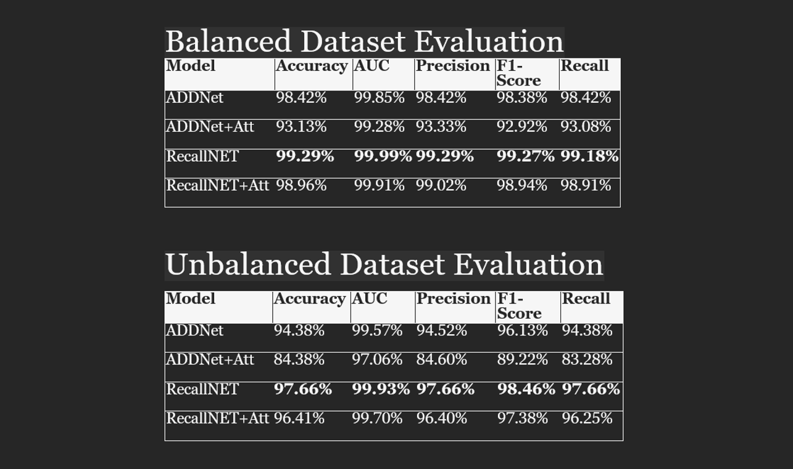

MRIs have become a fundamental tool in medical diagnostics and are widely used by physicians to detect, diagnose, and monitor a variety of conditions. This has in particular been useful for studying the brain and its various neuro-degenerative ailments such as Alzheimer’s Disease.
While substantial progress in the subfields of medical imaging have been made, the need for a human expert to manually review each scan has remained a resource intensive task that grows ever more challenging in today’s day in age.
The incorporation of modern computer vision techniques into the diagnostic pipeline offers a solution to this problem, as it would significantly cut down on the time it takes to assess an image for early-signs of cognitive impairment (CI).
